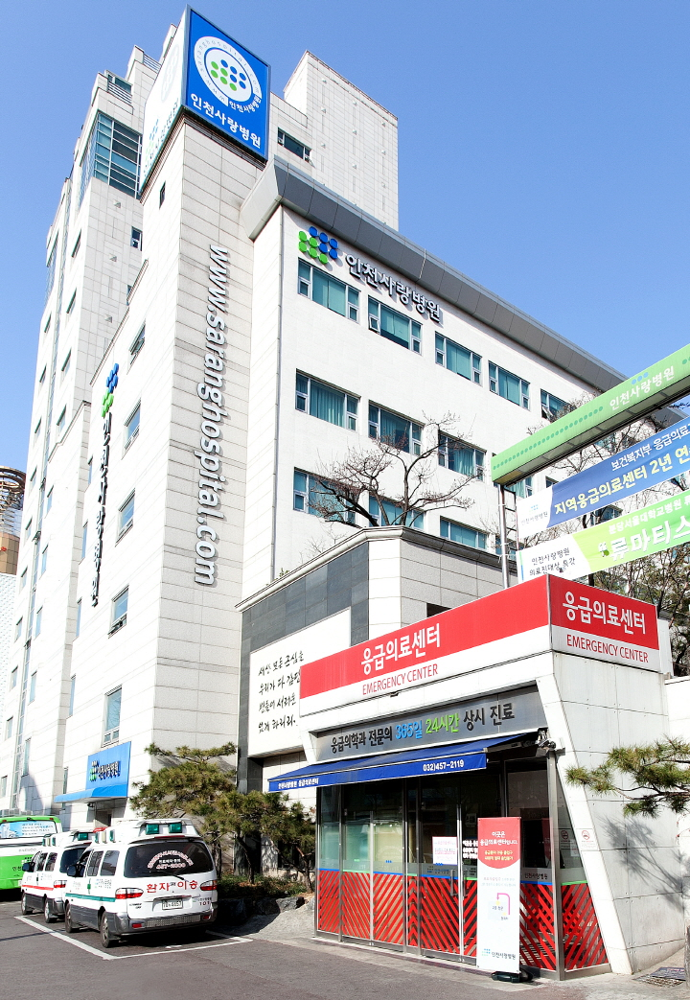
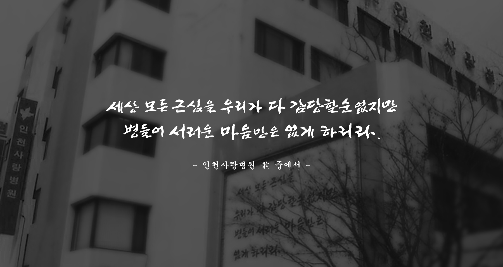

대한민국 최고
美 세계적인 시사주간지 뉴스위크가 뽑은
대한민국 최고
100대 병원 4년 연속 선정
27개국, 2200개 이상의 병원평가 우수한 의료진, 풍부한 임상경험, 체계적인 치료시스템 인정받아

인천사랑병원 센터안내
건강정보
CONTACT US
인천광역시 미추홀구 미추홀대로 726
- 평ㅤ일
- 08:30 ~ 17:30
- 토요일
- 08:30 ~ 12:30
점심시간 12:30 ~ 13:30
응급의료센터는 365일 24시간 운영합니다